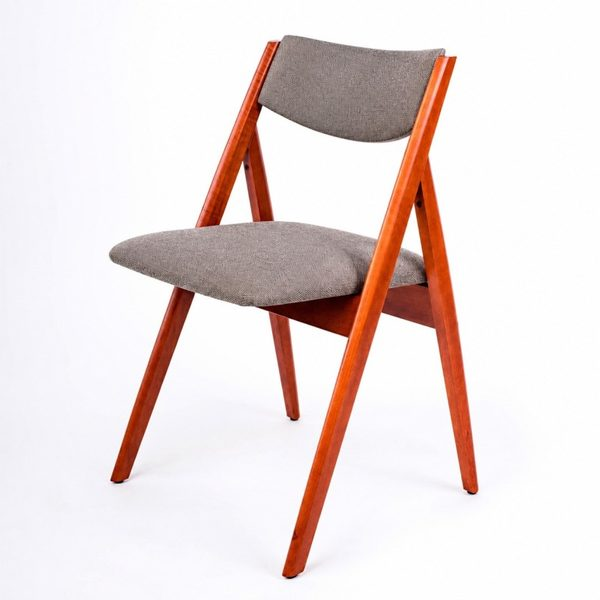
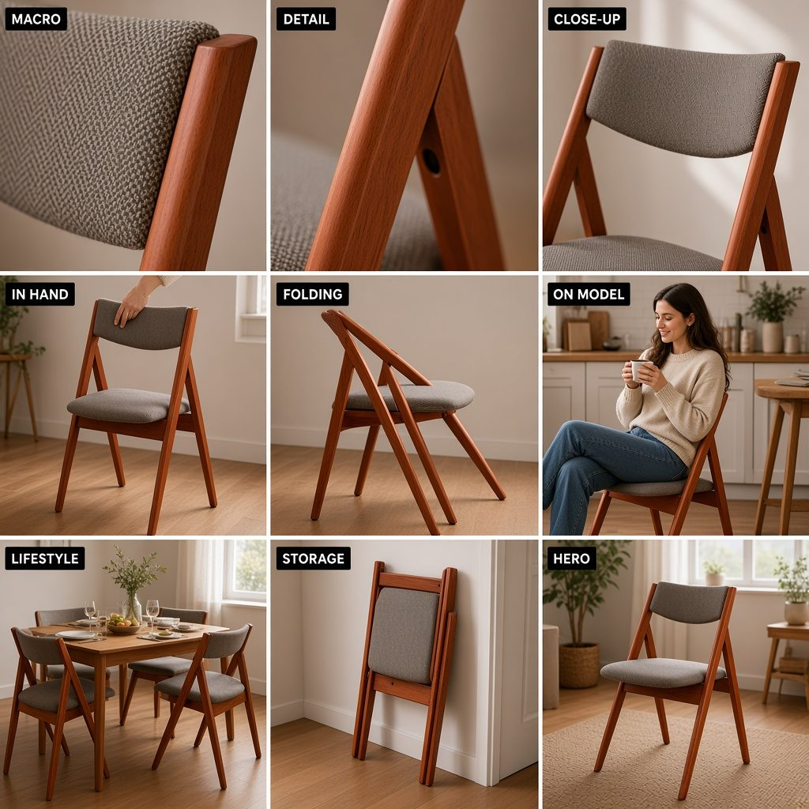
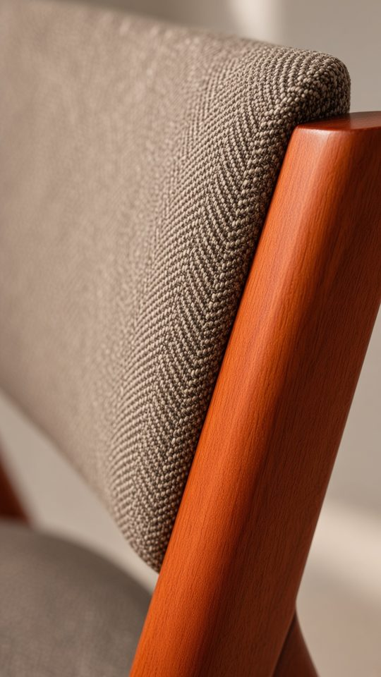
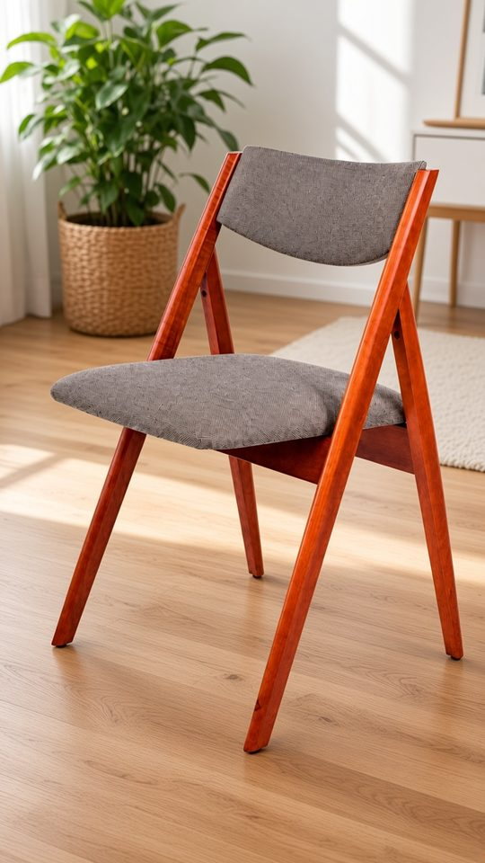
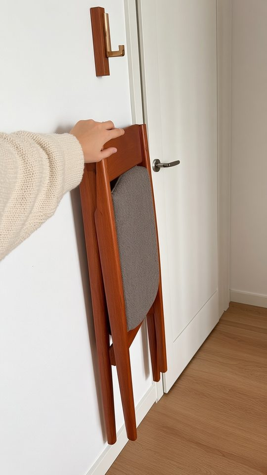

AI-UGC ролики для магазинов — без съёмок и без моделей
Тест на товаре клиента-магазина (складной стул). Все люди в кадре — сгенерированные вымышленные персонажи. Страница не для клиентов.
1. Итоговый ролик (15 сек, 9:16)
4 клипа image-to-video по 4 сек + склейка ffmpeg + текстовые плашки. Без музыки.
2. Вход → раскадровка


3. Ключевые кадры (стартовые для видео)



4. Честная оценка теста
- Цвет и материал держатся: тон дерева «тёмный бурштин» и серо-коричневая ткань похожи на оригинал во всех кадрах; макро-текстура «ёлочкой» — лучший кадр.
- Форма — почти: A-образный каркас узнаваем, но в раскадровке пропорции «гуляют» (ножки тоньше/длиннее, кадр FOLDING показывает неправдоподобную схему складывания). На облёте камеры (HERO) геометрия ножек слегка «плывёт» между кадрами.
- Складывание: механизм модель не понимает — сам момент складывания не генерировали (будет брак). Для «как складывается» нужен реальный 3-сек футаж от клиента.
- Руки/лицо: в выбранных кадрах пальцы нормальные (5), лицо и мимика естественные; глоток кофе без артефактов. В сетке 3×3 рука на кадре IN HAND мелкая — при крупном плане риск выше.
- Для рекламы: годится как тестовый креатив для таргета/рилс (хук-варианты, сторис). Не годится там, где важна точная конструкция или логотип — нужно 1–2 перегенерации на кадр и отбор человеком.
- Потрачено: 5 картинок (1 раскадровка + 4 кадра) и 4 видео по 4 сек, без перегенераций.
5. Продукт: вход → выход
Вход от клиента: 2–5 фото товара (белый фон + в интерьере), ссылка на карточку, 3 преимущества, ЦА, что нельзя показывать. Для сложной механики — 1 короткое реальное видео.
Выход: вертикальный ролик 10–20 сек в стиле «снято на телефон» + 3 варианта хука (первые 2 сек/плашка) на каждый ролик — по нашему правилу ТЗ видео.
Инструменты (цены проверены 02.11.2026)
| Задача | Инструмент | Цена | Вывод |
|---|---|---|---|
| Кадры/раскадровка | Nano Banana 2.1 (Gemini API) | $0.0336 / img 1K ↗ | Основной: дёшево, держит референс |
| Nano Banana Pro (fal) | $0.15 / img ↗ | Для «героя», где важна точность | |
| Seedream 4 (fal) | $0.03 / img ↗ | Альтернатива, тест на бьюти | |
| Видео | Kling 3.0 API, 720p без звука | $0.084 / сек ↗ | Основной по цене/качеству |
| Kling 4.0 API, 720p | $0.157 / сек ↗ | Сложные кадры с руками | |
| Kling Pro (подписка) | $293.04/год ≈ $24.4/мес, 3000 кредитов; 720p без звука 6 кр/сек ↗ ↗ | Дешевле всего на объёме, но без API | |
| MiniMax Hailuo H3, 768p | $0.08 / сек ↗ | Запасной | |
| Veo 3.1 (через Runway API) | $0.20/сек без звука, $0.40 со звуком ↗ | Премиум; в Gemini API превью закрыто 22.10.2026 ↗ | |
| Runway (подписка Gen-4.5) | $28/мес = 2250 кр, Gen-4.5 12 кр/сек ↗ | Один кабинет на много моделей | |
| Higgsfield | Plus $59/мес, 1200 кр ↗ | Удобно руками, через MCP/CLI всегда списывает кредиты ↗ | |
| Sora 2 | API OpenAI закрыт 24.09.2026 ↗ | Не закладываем | |
| Склейка | ffmpeg (в боте) / CapCut (руками) | ffmpeg бесплатно | ffmpeg — автосборка + хуки; CapCut — ручная полировка |
Обёртка: TG-бот для менеджера
- /storyboard + фото → сетка 3×3 и 9 отдельных кадров кнопками «взять / перегенерить».
- /video → по выбранным 4–5 кадрам параллельно i2v (Kling API), затем ffmpeg-склейка, плашки, 3 версии хука.
- /hooks → 3 варианта первых 2 сек под ЦА (текст по ТЗ-правилу).
- Человек в цикле: ничего не уходит клиенту без апрува менеджера. Хостинг — отдельный дешёвый сервер, не Netlify Functions.
6. Себестоимость одного ролика (15 сек)
Допущения (оценка): 4 клипа × 4–5 сек; с перегенерациями ≈ 40 сек сгенерированного видео и ≈ 10 картинок на ролик. Время человека — оценка, ставка 400 ₴/ч условная, подставить реальную. Курс НБУ 45.35 ₴/$ на 02.11.2026.
| Вариант | Картинки | Видео | Генерации | Человек | Итого |
|---|---|---|---|---|---|
| Подписка Kling Pro + NB 2.1 | $0.34 | ≈$2.0 (500 сек/мес на 12 роликов) | ≈ 106 ₴ | 200–400 ₴ | ≈ 300–500 ₴ |
| Kling 3.0 API + NB 2.1 | $0.34 | $3.36 | ≈ 168 ₴ | 200–400 ₴ | ≈ 370–570 ₴ |
| Kling 4.0 API + NB Pro | $1.50 | $6.28 | ≈ 353 ₴ | 200–400 ₴ | ≈ 550–750 ₴ |
| Veo 3.1 со звуком + NB Pro | $1.50 | $16.00 | ≈ 794 ₴ | 200–400 ₴ | ≈ 1 000–1 200 ₴ |
Человек: 40–60 мин/ролик вручную сейчас, 20–30 мин с ботом (оценка). Ориентир рынка: живой UGC-ролик в Украине 500–2 500 ₴, сложный 3 000–7 000 ₴ ↗.
7. Пакеты (предложение, оценка)
Себест. ≈ 1 700–2 250 ₴. Цель — продать пакет. Клиентам на ведении можно зачесть в первый месяц.
Себест. ≈ 5 500 ₴ (вариант Kling 4.0, с ботом) → маржа ≈ 4 400 ₴ (~44%). На подписке Kling — маржа выше.
Себест. ≈ 11 000 ₴ → маржа ≈ 6 900 ₴ (~38%). На подписке Kling/Runway ≈ 6–10 тыс. ₴ себест.
Для сравнения: средний чек NetWorX за ведение ≈ 20–22 тыс. ₴/мес — пакет 10 роликов ≈ +45–50% к чеку, хорошая допродажа к таргету.
8. Риски
- Маркировка Meta: Meta может сама повесить «AI info» на объявление, если распознаёт генерацию ↗; обязательное раскрытие — для соц./политической рекламы ↗. Закладываем в договор, что метка возможна.
- Правдивость: ролик не должен показывать того, чего товар не умеет (размер, механизм, комплект). Каждый ролик сверяем с карточкой товара; спорные функции — только реальным футажом.
- Искажение товара: форма/логотип/надписи «плывут» — 1–2 перегенерации на кадр, отбор человеком, клиент апрувит перед запуском.
- Лица: только сгенерированные вымышленные модели; никаких фото реальных людей и знаменитостей как референса.
- Зависимость от вендоров: модели закрываются (Sora API, превью Veo в Gemini API) — держим 2 провайдера.
9. Что нужно от клиента
- Фото товара: 2–5 шт. (белый фон + интерьер), лучше с разных сторон.
- Карточка товара и 3 главных преимущества; что нельзя показывать/обещать.
- Для механики (складывание, нанесение) — 1 реальное видео 3–5 сек.
- Согласие на AI-формат и возможную метку «AI info».
NetWorX · внутренний тест · все цены вендоров — по ссылкам на 02.11.2026; цены пакетов, время и ставки — оценка.